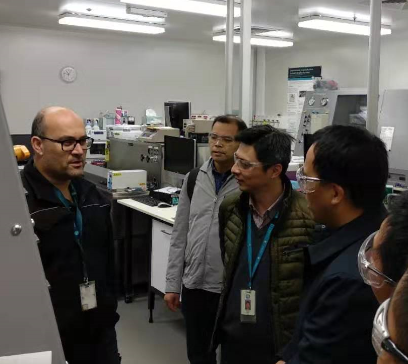

2019年8月22日，应澳大利亚联邦科学与工业研究组织和2019澳大利亚采矿通风国际会议的邀请，中国矿业大学副校长周福宝教授带领魏连江副教授、王凯副教授、王雁鸣副教授一行4人赴澳大利亚开展了学术访问交流活动，历经8天，顺利完成访问任务，于2019年8月29日返回国内。

8月22日下午，周福宝教授等人访问了澳大利亚联邦科学与工业研究组织（CSIRO）墨尔本能源研究所，实验室主任Zhejun Pan研究员为访问团介绍了CSIRO的基本情况与科研现状，并带领参观了非常规天然气储层工程实验室及面向工程应用开发的全尺寸实验装备与集成化现场测试平台；之后，周福宝教授代表访问团向外方专家介绍了中国矿业大学矿业、安全相关领域科研现状与发展趋势，双方共同探讨了加强国际学术交流与合作等事宜。
8月23日上午，访问团参观了CSIRO墨尔本非常规天然气实验室，重点考察了该实验室自主研发的页岩气吸附/游离气量、扩散和渗透率测试等多套实验设备及其性能特点。23日下午，访问团在该实验室听取了Zhejun Pan研究员关于“Gas transport in prop pant supported shale fracture”的现场报告，周福宝教授与团组成员对基于3D打印的页岩渗透率各向异性测试新技术进行了咨询与研讨，之后双方针对先进实验装备的设计与试制思路、实验室专业化建设及安全标准化管理等方面进行了经验交流。
8月24日上午，访问团顺利完成了在墨尔本的学术访问交流任务，乘飞机抵达澳大利亚布里斯班。下午访问团到达昆士兰大学，走访了采矿与机械工程系实验室与电子显微中心。应邀参加了纳米科学首席科学家Jin Zou教授与Zhongwei Chen博士组织的学术研讨，针对当前双方开展课题与研究方向进行了深入讨论。之后参观了国际先进的透射电镜微纳结构成像装备以及高能岩石力学、超低渗测试等实验平台，并与相关技术人员进行了交流。
8月25日上午，访问团应邀走访位于布里斯班的CSIRO昆士兰先进技术中心，CSIRO煤炭开采研究院院长和首席研究员Hua Guo教授为访问团介绍了先进技术中心的基本情况及智能采矿、低排放煤炭技术、自主化系统等科研成果，周福宝教授与访问团成员向外方专家介绍了当前课题进展及在智能通风、矿山防灾减灾技术等方面的最新成果，报告后双方针对研发单位、政府机构和行业之间的协同创新研究与技术成果转化机制进行了研讨，同时对进一步加强国际学术合作达成了共识。
8月25日下午，访问团受Hua Guo院长的邀请参观了昆士兰先进技术中心，重点考察了智能感知与自动化开采技术、先进掘进技术实验室，听取了实验室主任Xingsheng Li研究员关于高硬度岩石钻进技术与装备的现场报告，对先进实验设备进行了演示，双方就相关科学问题与研究方向进行了深入讨论。
8月26日上午，访问团顺利完成了在布里斯班的学术访问交流任务，乘飞机抵达澳大利亚珀斯。下午抵达学术会议举办会场，参加为期三天的2019澳大利亚矿业通风国际会议。在参会期间，周福宝教授及团组成员积极听取会议报告，了解掌握全球矿业通风领域的最新科研进展与行业动态，并与来自美国、澳大利亚、德国、中国等270余位相关领域专家学者共同交流探讨热点学术问题。
8月27日上午，周福宝教授在会议现场作题为“Dust control in the construction of tunnels and coal mines under condition of positive pressure ventilation”的大会主旨报告，介绍了自主研发的矿井粉尘控制新方法与技术现场示范，得到了与会专家的广泛关注与热烈讨论。下午，访问团成员王雁鸣博士作题为“A Study on the performance of novel blast-proof door under gas explosion”的分会报告。
8月28日上午，访问团成员王凯博士作题为“Study on coordinated control and intelligent regulation for the disaster smoke flow in coal mines”的分会报告。下午采矿通风国际会议闭幕式结束之后，周福宝教授等4人启程返国。
此次出访，与澳大利亚国际一流科研单位进行了深入的学术交流和学习，了解了矿业通风领域科研与行业的最新成果及发展动向，获得了先进实验室建设的宝贵经验；参加了矿业通风国际会议，与全球领域专家共同探讨了学科前沿与热点问题，开阔了国际学术视野；同时与外方达成加强合作的共识，为今后进一步开展国际科研协同创新奠定了良好的基础，顺利完成了本次出访任务，达到了预期的目的。